수능(국어영역) (2014-03-12 기출문제)
1. <보기>를 참고하여 [A]의 발화를 수정한다고 했을 때, 가장 적절한 것은?(1번 공통지문 문제)
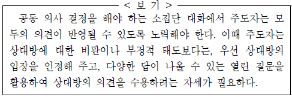
- “보고서 작성이 하고 싶다구? 음, 그래 그럴 수도 있어. 우선은 각자 하고 싶은 것을 얘기하자고 했으니까 괜찮아. 그러면 먼저 얘기한 도윤이의 입장도 들어보자.”
- “아, 너도 보고서 작성이 하고 싶었구나. 말하기 어려웠을 텐데, 지금이라도 얘기해 줘서 고마워. 그런데 네가 보고서 작성이 하고 싶은 특별한 이유라도 있니?”
- “그렇구나. 서영이 네 생각도 인정해. 하지만 도윤이 입장도 있으니까, 쉽게 결정할 수는 없는 문제인 것 같아. 만약 도윤이가 반대한다면 조금 어렵지 않을까?”
- “어, 그래? 그러면 도윤이랑 하고 싶은 게 똑같네. 그러면 서로 입장이 충돌하니까 이따가 선생님께 어떻게 하면 좋을지 여쭤보는 게 좋을 것 같아.”
- “좀 더 빨리 얘기했으면 좋았을 텐데. 아까 도윤이가 얘기한거 들었지? 도윤이가 먼저 하기로 했으니까 이번에는 네가 양보해 줬으면 좋겠어.”
(정답률: 알수없음)

2. 다음은 라디오 대담의 일부이다. 대담 참여자의 말하기 방식에 대한 설명으로 적절하지 않은 것은? [3점]
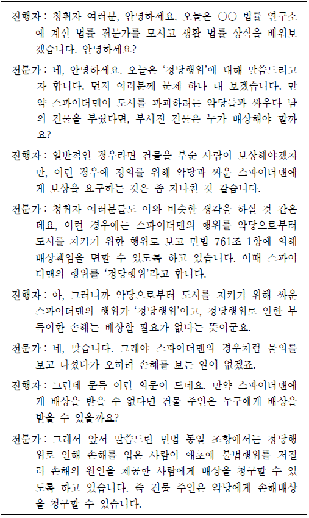
- 진행자는 화제와 관련된 질문을 던지며 대담을 진전시키고 있다.
- 진행자는 전문가가 한 말의 핵심 내용을 재확인함으로써 청취자들의 이해를 돕고 있다.
- 전문가는 구체적인 법률 근거를 제시하여 신뢰성을 높이고 있다.
- 전문가는 추가적인 정보를 제시함으로써 진행자의 오해를 바로 잡고 있다.
- 전문가는 손해배상 책임과 관련된 가상적 상황을 설정함으로써 화제에 대한 흥미를 유발하고 있다. [4 ~ 5] 다음은 학생이 수업 시간에 한 발표이다. 물음에 답하시오.
(정답률: 알수없음)
3. 위 발표를 들은 청중들의 반응으로 적절하지 않은 것은?(4번 공통지문 문제)
- 발표자의 실제 경험을 들어 흥미를 유발한 것 같아.
- 질문을 통해 청중과 상호작용을 하고 있는 것 같아.
- 비유적 표현으로 발표자의 심리를 잘 드러낸 거 같아.
- 상황에 맞게 비언어적인 표현을 활용하고 있는 것 같아.
- 내용과 관련된 그림을 활용하여 시각적 효과를 높인 것 같아.
(정답률: 알수없음)
4. 윗글을 수정, 보완하는 과정에서 <보기>를 활용하는 방안으로 적절하지 않은 것은? [3점](6번 공통지문 문제)
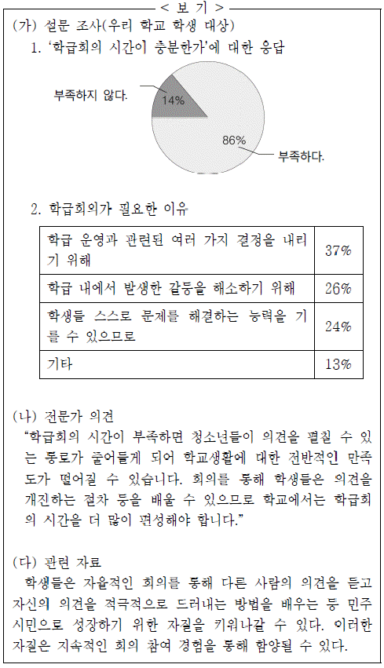
- [A] : (가)-1을 활용하여, 학급회의 시간이 부족하다는 문제 제기의 근거로 제시한다.
- [B] : (가)-2를 활용하여, 학급회의를 통해 구성원들 사이에서 발생한 갈등을 해소할 수도 있다는 내용을 추가한다.
- [C] : (나)를 활용하여, 학급회의 시간이 부족하면 학생들의 학교생활 만족도가 떨어질 수 있음을 지적한다.
- [D] : (나)와 (다)를 활용하여, 학급회의 시간을 늘리는 것이 교육적인 면에서 도움이 된다는 것을 언급한다.
- [E] : (가)와 (다)를 활용하여, 학급회의 시간 편성을 늘리기 위해 학생들이 실천할 수 있는 방안을 제시한다.
(정답률: 알수없음)
5. 다음 [자료]를 읽고 [조건]에 맞게 쓴 글로 가장 적절한 것은?
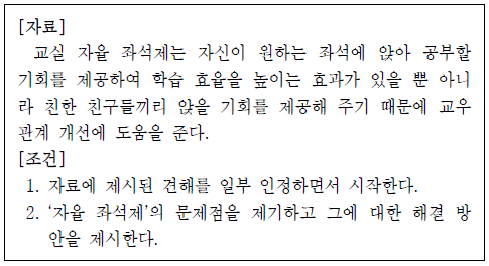
- 자율 좌석제는 학습 효율을 높여 줄 수 없다. 학생들이 앞자리에서부터 앉기보다는 뒷자리에서부터 앉을 가능성이 크기 때문이다. 학습 효율을 높이기 위해서는 앞자리에 앉는 학생을 독려하는 방안을 강구해야 한다.
- 자율 좌석제가 학습 효율을 높이는 측면이 있다는 것은 사실이다. 하지만 친한 친구들끼리만 앉게 되면 교우 관계를 넓히기 어렵다는 단점도 있다. 따라서 일정 기간이 지나면 짝을 바꾸도록 하는 보완책을 마련해야 한다.
- 자율 좌석제는 공부하는 학생들이 앞자리에 앉는 긍정적 효과 보다는 공부하기 싫은 학생들이 뒷자리를 찾아 앉도록 하는 부정적 효과가 더 크다. 자율 좌석제 시행은 시기상조이다.
- 자율 좌석제는 학습 의욕이 높은 학생들이 앞자리에서 활발하게 수업에 참여하는 동시에 뒷자리에 앉은 학생들에게 수업에 참여하도록 동기를 제공하는 효과가 있다. 따라서 자율좌석제를 적극적으로 시행해야 한다.
- 자율 좌석제를 시행하면 키가 작거나 눈이 나쁜 학생들이 뒷자리에 앉게 될 수 있다. 이러한 부작용을 해결하기 위해서는 이 학생들에게 예외적으로 좌석을 지정해 주어야 한다.
(정답률: 알수없음)
6. 윗글을 고쳐 쓰기 위한 방안으로 적절하지 않은 것은?(9번 공통지문 문제)
- ㉠: 문맥상 적절한 어휘가 아니므로 ‘다급한’으로 고친다.
- ㉡: 어미의 사용이 잘못되었으므로 ‘하는데’로 고친다.
- ㉢: 자연스러운 연결을 위해 바로 앞의 문장과 순서를 바꾼다.
- ㉣: 조사의 사용이 잘못되었으므로 ‘청소를’로 고친다.
- ㉤: 글의 흐름에 어긋나는 문장이므로 삭제한다.
(정답률: 알수없음)
7. <보기>의 음운 현상과 가장 관계 깊은 것은?
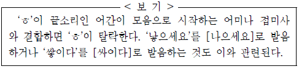
- ‘하얗다’를 [하야타]라고 발음한다.
- ‘좁히다’를 [조피다]라고 발음한다.
- ‘놓는다’를 [논는다]라고 발음한다.
- ‘그렇죠’를 [그러쵸]라고 발음한다.
- ‘좋아요’를 [조아요]라고 발음한다.
(정답률: 알수없음)
8. <보기>의 ㉠을 설명할 수 있는 사례로 가장 적절한 것은?
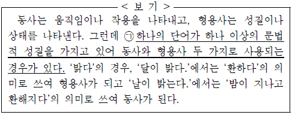
- 그녀의 속눈썹은 길다.
긴 겨울방학이 끝났다. - 나이보다 얼굴이 젊다.
젊은 나이에 성공을 했다. - 봄바람이 따뜻하다.
따뜻한 마음씨를 가져야 한다. - 나는 너에 대한 기대가 크다.
우리 아들은 키가 쑥쑥 큰다. - 외출하기에는 시간이 너무 늦다.
그는 늦은 나이에 대학에 진학했다.
(정답률: 알수없음)
9. <보기>의 설명을 바탕으로, 피동 표현을 만들어 보았다. 잘못된 것은? [3점]
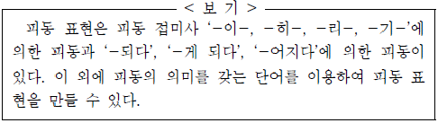
- ‘아이가 밥을 먹었다.’를 피동 접미사 ‘-이-’를 사용하여 ‘아이에게 밥을 먹였다.’로 바꾸었다.
- ‘아이들이 꼬마를 놀렸다.’를 ‘당하다’를 사용하여 ‘꼬마가 아이들에게 놀림을 당했다.’로 바꾸었다.
- ‘사냥꾼이 토끼를 잡았다.’를 피동 접미사 ‘-히-’를 사용하여 ‘토끼가 사냥꾼에게 잡혔다.’로 바꾸었다.
- ‘사람들이 생태계를 파괴하였다.’를 ‘-되다’를 사용하여 ‘생태계가 사람들에 의해 파괴됐다.’로 바꾸었다.
- ‘박 감독이 이 영화를 만들었다.’를 ‘-어지다’를 사용하여 ‘이 영화는 박 감독에 의해 만들어졌다.’로 바꾸었다.
(정답률: 알수없음)
10. 다음은 ‘다의어’에 관한 탐구학습지의 일부이다. ㉮에 들어갈 내용으로 적절한 것은?
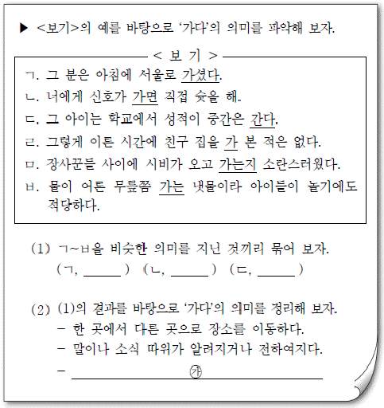
- 어떤 대상을 기준으로 해서 어느 정도까지 이르다.
- 일정한 시간이 되거나 일정한 곳에 이르다.
- 그러한 상태가 생기거나 일어나다.
- 어떤 현상이나 상태가 유지되다.
- 관심이나 눈길 따위가 쏠리다.
(정답률: 알수없음)
11. 아래의 글에서 <보기>의 ㉮와 ㉯가 모두 나타난 것은?
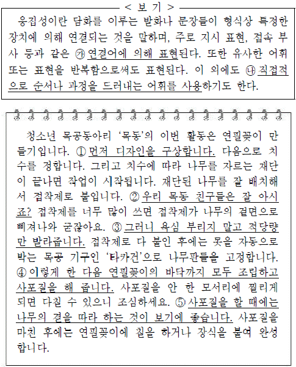
- 먼저 디자인을 구상합니다. 다음으로 치수를 정합니다. 그리고 치수에 따라 나무를 자르는 재단이 끝나면 작업이 시작됩니다. 재단된 나무를 잘 배치해서 접착제로 붙입니다.
- 우리 목동 친구들은 잘 아시죠? 접착제를 너무 많이 쓰면 접착제가 나무의 겉면으로 삐져나와 굳잖아요.
- 그러니 욕심 부리지 말고 적당량만 발라줍니다. 접착제로 다 붙인 후에는 못을 자동으로 박는 목공 기구인 ‘타카건’으로 나무판들을 고정합니다.
- 이렇게 한 다음 연필꽂이의 바닥까지 모두 조립하고 사포질을 해 줍니다. 사포질을 안 한 모서리에 찔리게 되면 다칠 수 있으니 조심하세요.
- 사포질을 할 때에는 나무의 결을 따라 하는 것이 보기에 좋습니다. 사포질을 마친 후에는 연필꽂이에 칠을 하거나 장식을 붙여 완성합니다.
(정답률: 알수없음)
12. 윗글을 통해 알 수 있는 ㉠에 대한 설명으로 가장 적절한 것은?(16번 공통지문 문제)
- 선입견을 이성의 일부로 인정하였다.
- 개인보다는 집단의 생각을 중시하였다.
- 비이성적인 판단을 수용할 수 있다고 보았다.
- 선입견을 통해 세계를 올바르게 이해할 수 있다고 보았다.
- 개인의 권위나 속단에서 비롯된 생각을 부정적으로 보았다.
(정답률: 알수없음)
13. ‘가다머’의 관점에서 <보기>를 이해한 내용 중, 가장 적절한 것은? [3점](16번 공통지문 문제)
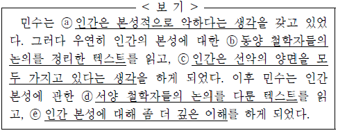
- 민수가 ⓐ라는 현재 지평을 갖게 된 것은 역사적 지평과의 지평 융합이 없었기 때문이다.
- 민수는 ⓒ와 ⓓ의 지평 융합을 통해 ⓐ를 긍정적으로 인식하게 된다.
- 민수에게 ⓑ, ⓒ, ⓓ, ⓔ는 동일한 시점에 모두 역사적 지평으로 작용한다.
- 민수의 현재 지평은 ⓑ, ⓓ와 순차적으로 지평 융합하면서 확장되어 간다.
- 민수는 ⓔ에 이르러 세계에 대한 이해를 완성하게 된다.
(정답률: 알수없음)
14. ㉠, ㉡에 대해 이해한 내용으로 적절하지 않은 것은?(19번 공통지문 문제)
- ㉠은 브랜드 대안이 적을 때에 주로 사용된다.
- ㉠은 고가의 제품을 구매하는 상황에 주로 사용된다.
- ㉡은 평가 기준 항목을 모두 사용하지 않고도 브랜드를 선택할 수 있는 경우가 있다.
- ㉡은 브랜드의 어떤 약점이 다른 장점에 의해 보완될 수 없다는 것이 전제되어 있다.
- ㉡은 하나의 평가 기준으로 브랜드 간의 평가 점수를 비교하는 방식이다.
(정답률: 알수없음)
15. 윗글을 토대로 <보기>에 대해 이해한 내용으로 적절하지 않은 것은? [3점](19번 공통지문 문제)
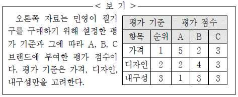
- 민영이 사전편집 방식을 사용한다면 A를 선택하겠군.
- 민영이 ‘가격’과 ‘디자인’의 순위를 바꾸어 사전편집 방식을 사용한다면 B를 선택하겠군.
- 민영이 ‘가격’의 허용 수준을 3으로 두고 순차적 제거 방식을 사용한다면 B를 먼저 제외하겠군.
- 민영이 모든 기준의 허용 수준을 3으로 두고 결합 방식을 사용한다면 C를 선택하겠군.
- 민영이 모든 기준의 허용 수준을 5로 두고 분리 방식을 사용한다면 C를 선택하겠군
(정답률: 알수없음)
16. 문맥상 ⓐ와 바꾸어 쓰기에 가장 적절한 것은?(19번 공통지문 문제)
- 수립(樹立)할
- 정립(定立)할
- 설립(設立)할
- 제정(制定)할
- 지정(指定)할
(정답률: 알수없음)
17. 윗글을 바탕으로 <보기>를 이해한 내용으로 적절하지 않은 것은?(23번 공통지문 문제)
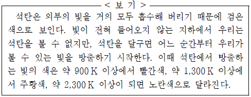
- 광원이 없다면 달궈지지 않은 석탄은 우리 눈에 보이지 않겠군.
- 석탄의 크기나 양을 달리해서 달궈도 온도가 같으면 석탄은 같은 색으로 빛나겠군.
- 달궈진 석탄을 볼 수 있는 것은 가시광선 영역에 해당하는 파장의 빛이 나오기 때문이군.
- 석탄에서 방출하는 빛의 색이 빨간색에서 노란색으로 변할수록 석탄이 방출하는 파장의 분포 곡선에서 그래프의 면적은 넓어지겠군.
- 석탄에서 방출하는 빛의 색이 빨간색에서 주황색으로 변할수록 석탄이 방출하는 파장의 분포 곡선에서 최고점은 오른쪽으로 이동하겠군.
(정답률: 알수없음)
18. ㉠을 바탕으로 ㉡을 판단하기 위해 필요한 사실로 가장 적절한 것은?(23번 공통지문 문제)
- 온도가 높을수록 흑체에서 복사하는 에너지의 양은 많아진다.
- 온도가 높을수록 모든 파장의 영역에서 에너지의 세기가 커진다.
- 온도가 높을수록 흑체복사 곡선에서 최고점에 해당하는 파장의 길이가 짧아진다.
- 태양보다 온도가 높은 별들은 태양에 비해 파장이 긴 전자기파도 더 많이 방출한다.
- 물체의 온도가 높아지는 정도와 흑체에서 방출하는 에너지의 세기는 반드시 비례하지는 않는다.
(정답률: 알수없음)
19. 윗글과 관련하여 <보기>를 이해한 것으로 적절하지 않은 것은?(26번 공통지문 문제)
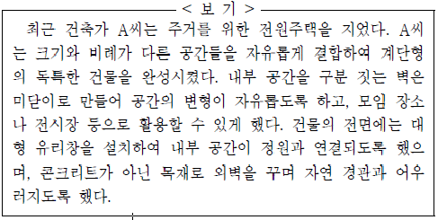
- A씨가 계단형의 비정형적인 건물을 지은 것은 주거 기능의 극대화를 위한 것이로군.
- A씨가 건물의 전면에 대형 유리창을 설치한 것은 내부 공간과 외부 공간의 연속성을 고려한 것이로군.
- A씨가 목재로 외벽을 꾸민 것은 주변 환경과의 조화를 통해 공간이 감성적 가치를 지니도록 한 것이로군.
- A씨가 벽을 미닫이로 만들어 공간을 변형할 수 있게 한 것은 공간을 가변적 대상으로 인식한 것이로군.
- A씨가 크기와 비례가 다른 공간을 자유롭게 결합한 것은 공간체험자가 공간의 상대성을 통해 예술적 경험을 할 수 있다고 생각한 것이로군.
(정답률: 알수없음)
20. ㉠과 관련된 설명으로 가장 적절한 것은?(28번 공통지문 문제)
- 책상이 지면과 수평이 아니라면 스마트폰을 책상 위에 평평하게 놓아도 z축이 중력가속도 방향과 나란하지 않게 된다.
- 책상의 높이를 낮추면 스마트폰과 지면의 거리가 가까워져서 스마트폰에 작용하는 중력가속도가 더 커지게 된다.
- 스마트폰을 기울어진 상태로 놓으면 x, y, z축 중 어떤 것도 중력가속도의 영향을 받지 않게 된다.
- 스마트폰의 옆면을 책상 위에 평평하게 놓으면 z축이 중력가속도 방향과 나란하게 된다.
- 화면이 지면을 향하게 놓으면 x축이 중력가속도 방향과 나란하게 된다.
(정답률: 알수없음)
21. 윗글을 바탕으로 <보기>를 이해한 내용으로 적절하지 않은 것은? [3점](28번 공통지문 문제)
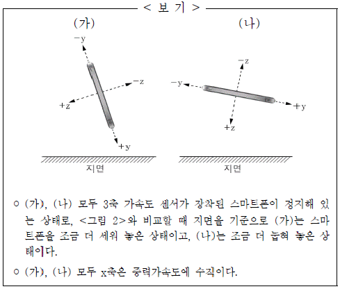
- (가)의 y축 가속도 센서 값은 <그림 2>보다 크다.
- (가)의 z축 가속도 센서 값은 (나)보다 작다.
- (나)의 z축 가속도 센서 값은 <그림 2>보다 크다.
- (나)의 y축 가속도 센서 값은 (가)보다 크다.
- (가), (나)의 x축 가속도 센서 값은 동일하다.
(정답률: 알수없음)
22. [A]에 대한 이해로 가장 적절한 것은?(31번 공통지문 문제)
- ‘너’와의 거리에서 오는 ‘나’의 안타까움이 나타나 있다.
- ‘너’로 인해 떠올린 고향에 대한 ‘나’의 그리움이 드러나 있다.
- ‘너’에게 조금씩 다가서면서 느끼는 ‘나’의 설렘이 나타나 있다.
- ‘너’에게 미처 다가서지 못하는 ‘나’의 부끄러움이 드러나 있다.
- ‘너’와의 갈등이 해소되기를 바라는 ‘나’의 바람이 나타나 있다.
(정답률: 알수없음)
23. <보기>를 참고하여 윗글을 감상한 내용으로 적절하지 않은 것은? [3점](31번 공통지문 문제)
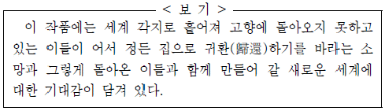
- 1연에서 ‘복사꽃’, ‘살구꽃’, ‘앵도꽃’, ‘오얏꽃’ 등이 ‘피었다고’한 것은 ‘너’가 돌아올 수 있는 여건이 마련되었음을 보여주는 것이겠군.
- 4연에서 ‘형’, ‘아우’, ‘순이’, ‘누이’ 등이 이미 ‘왔다’고 한 것은 ‘새로운 세계’를 열어가는 데 모두 동참할 수 있도록 ‘너’의 귀환을 재촉하는 것이겠군.
- 4연의 ‘별들 서로 정답게 모이는 날’과 6연의 ‘우리, 우리, 옛날을 옛날을, 딩굴어 보자’로 보아, 함께 만들어 갈 세계는 공동체의 회복과 관련되어 있겠군.
- 5연의 ‘눈물과 피와 푸른 빛 깃발을 날리며 오너라’와 6연의 ‘종달새는 운다’로 보아, 새로운 세계를 위해서는 ‘너’의 희생이 필연적으로 뒤따르게 된다고 볼 수 있겠군.
- 6연의 ‘풀피리나 불고’와 ‘붕새춤 추며’는 ‘너’의 귀환이 이루어진 후 ‘너’와 함께 만들어 갈 세계에 대한 기대감을 형상화한 것으로 볼 수 있겠군.
(정답률: 알수없음)
24. ㉮에 이어서 ‘정씨’가 할 수 있는 말을 <보기>와 같이 구성하려고 할 때, 빈칸에 들어갈 표현으로 가장 적절한 것은?(34번 공통지문 문제)
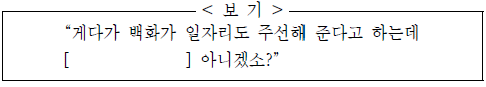
- 일석이조(一石二鳥)
- 다다익선(多多益善)
- 전화위복(轉禍爲福)
- 이심전심(以心傳心)
- 금의환향(錦衣還鄕)
(정답률: 알수없음)
25. <보기>를 바탕으로 윗글을 감상한 내용으로 적절하지 않은 것은? [3점](34번 공통지문 문제)
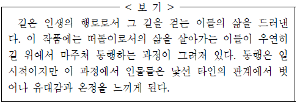
- ‘산골 마을’을 지나는 인물들이 추위와 허기 속에서도 여정을 계속하는 것에서 고달픈 떠돌이의 삶을 읽을 수 있군.
- ‘폐가’는 ‘불가’에 다가앉아 온기를 느끼는 일시적인 쉼터가 된다고 할 수 있군.
- ‘읍내’는 백화와 영달, 정씨와 같이 중심부에서 밀려난 자들을 포용하는 공간이라고 할 수 있군.
- ‘장터’에서 ‘따뜻한 온기가 남아 있는 팥시루떡’을 나누는 모습에서 인물들 사이의 유대감을 느낄 수 있군.
- ‘역’은 백화가 ‘고향’으로 가면서 세 인물의 동행이 끝나는 공간이라고 할 수 있군.
(정답률: 알수없음)
26. ㉠ ~ ㉤에 대한 이해로 적절하지 않은 것은?(34번 공통지문 문제)
- ㉠ : 백화가 영달에게 호감을 갖게 되었음을 알 수 있다.
- ㉡ : 영달은 일자리를 찾을 수 있다는 희망에 부풀어 있음을 알 수 있다.
- ㉢ : 정씨는 영달의 처지를 고려하여 함께 갈 것을 제안하고 있음을 알 수 있다.
- ㉣ : 백화에 대한 영달의 따뜻한 마음을 알 수 있다.
- ㉤ : 정씨와 영달에 대한 신뢰와 고마움의 표현으로 볼 수 있다. [38 ~ 40] 다음 글을 읽고 물음에 답하시오.
(정답률: 알수없음)
27. <보기>를 통해 윗글을 이해한 내용으로 적절하지 않은 것은? [3점](38번 공통지문 문제)
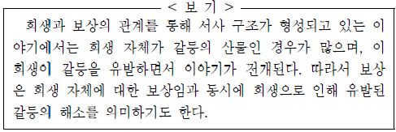
- 심청의 희생은 심 봉사가 눈뜨기를 바라는 심청의 욕구와 공양미를 시주할 수 없는 가난한 현실 간의 갈등이 빚어낸 결과로 볼 수 있다.
- 사당에 하직을 고하는 심청의 언행은 자신의 희생이 조상에 대한 불효로 이어지는 데에 따른 심리적 갈등을 드러낸 것으로 볼 수 있다.
- 효를 위해 목숨을 희생해야 한다고 생각하는 심청과 이에 반대하는 심 봉사 간의 대립은 심청의 희생 결정이 불러일으킨 갈등으로 볼 수 있다.
- 동네 사람들이 심 봉사를 위로하는 모습은 심청의 희생으로 유발된 심 봉사와 동네 사람들 간의 갈등 해소를 의미하는 것으로 볼 수 있다.
- 뱃사람들이 심 봉사를 위해 물질적인 도움을 주는 것은 심청의 희생에 대한 보상으로 볼 수 있다.
(정답률: 알수없음)
28. [A]의 ‘승상 부인’과 ‘심청’에 대한 설명으로 적절하지 않은 것은?(38번 공통지문 문제)
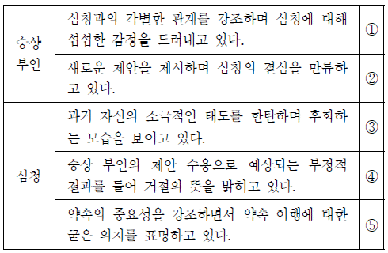
- ①
- ②
- ③
- ④
- ⑤
(정답률: 알수없음)
29. (가)의 표현상 특징으로 적절하지 않은 것은?(41번 공통지문 문제)
- 시선의 이동에 따라 시상을 전개하고 있다.
- 대구를 활용하여 리듬감을 만들어 내고 있다.
- 비유적 표현으로 대상의 이미지를 형상화하고 있다.
- 역설적 표현을 사용하여 화자의 정서를 강조하고 있다.
- 의성ㆍ의태어를 다채롭게 구사하여 생동감을 살리고 있다.
(정답률: 알수없음)
30. <보기>의 관점에서 (나)를 이해한 것으로 적절하지 않은 것은? [3점](41번 공통지문 문제)
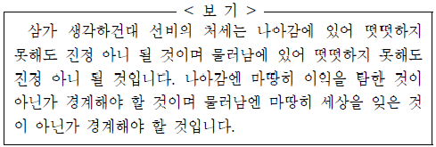
- ‘알맞게 먹’고 ‘슬카지 노니’는 것은, 물러난 ‘나’가 선택한 삶의 방식으로 볼 수 있겠군.
- ‘그 남은 여남은 일’은 이익을 탐하는 것으로 ‘나’가 경계하고자 하는 것이라 할 수 있겠군.
- ‘성이 게으르’다는 것은 물러남에 있어 떳떳하지 못한 ‘나’의 모습을 드러낸 것이라 할 수 있겠군.
- ‘나’는 물러남으로 인해 ‘다툴 이’와 거리를 두고 있다고 할 수 있겠군.
- ‘임금 은혜’를 ‘갚고자’ 하는 태도는, ‘나’가 세상을 잊은 것이 아님을 보여주는 것이라 할 수 있겠군.
(정답률: 알수없음)
31. <보기>를 바탕으로 윗글을 이해할 때, 적절하지 않은 것은?(44번 공통지문 문제)
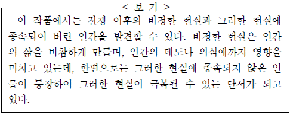
- ‘회기’가 일하고 있는 병원과 ‘인옥’이 일하고 있는 어두운 공장은 이들을 둘러싼 비정한 현실 중의 하나라고 볼 수 있다.
- 부탁을 들어주지 않는 ‘회기’에게 기계와 같다고 말하는 ‘인옥’에게서 비정한 의식을 지니게 된 인간의 모습을 엿볼 수 있다.
- 의사로서 도의심 따위는 느껴 보지 못했다는 ‘회기’의 말에서 비정한 현실의 영향이 그의 의식에까지 미쳐 있음을 알 수 있다.
- ‘인옥’과 ‘금숙’을 대하는 ‘회기’의 태도는 그가 비정한 현실속에 살아가면서 그 영향을 받아 나타나게 된 것으로 볼 수 있다.
- ‘인옥’의 처지를 생각하는 ‘금숙’의 말이나 ‘회기’에 대한 ‘금숙’의 태도에서 비정한 현실이 극복될 수 있는 단서를 발견할 수 있다.
(정답률: 알수없음)